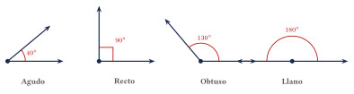
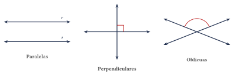
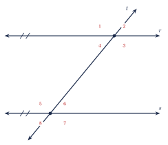

Capítulo 19
Elementos básicos de geometría
IPN CENEVAL
La geometría euclidiana estudia las propiedades de puntos, rectas, planos y figuras construidas a partir de ellos. Estos conceptos permiten describir posiciones, direcciones, distancias y relaciones angulares. En este capítulo estudiarás los elementos fundamentales de la geometría, la clasificación de los ángulos y las relaciones que se producen cuando dos rectas paralelas son cortadas por una transversal.
19.1 Punto, recta y plano#
Los conceptos fundamentales de la geometría euclidiana son:
- Un punto representa una posición exacta y carece de longitud, anchura y altura. Se nombra mediante una letra mayúscula, como \(A\), \(B\), \(P\) o \(Q\).
- Una recta se extiende indefinidamente en dos direcciones y no tiene extremos. Puede nombrarse mediante una letra minúscula, como \(r\) o \(s\), o mediante dos de sus puntos: \[\overleftrightarrow{AB}.\]
- Un plano es una superficie plana que se extiende indefinidamente en todas las direcciones y no tiene grosor. Puede nombrarse mediante una letra griega o mediante tres puntos no colineales.
Los puntos, las rectas y los planos se consideran conceptos primitivos de la geometría. Esto significa que se describen mediante sus propiedades y relaciones, pero no se definen a partir de objetos geométricos más sencillos.
A partir de una recta pueden distinguirse los siguientes objetos:
- El segmento \(\overline{AB}\) es la parte de una recta comprendida entre los puntos \(A\) y \(B\), incluidos ambos extremos.
- La semirrecta \(\overrightarrow{AB}\) tiene como origen el punto \(A\), pasa por el punto \(B\) y se extiende indefinidamente en esa dirección.
- La recta \(\overleftrightarrow{AB}\) pasa por \(A\) y \(B\) y se extiende indefinidamente en ambas direcciones.
Los términos semirrecta y rayo se utilizan con frecuencia como sinónimos. En ambos casos existe un punto de origen y una dirección determinada.
El orden de las letras es importante. Por ejemplo:
tiene su origen en \(A\) y pasa por \(B\), mientras que:
tiene su origen en \(B\) y pasa por \(A\).
Las diferencias entre un segmento, una semirrecta y una recta pueden observarse en las siguientes representaciones:
19.2 Ángulos#
Un ángulo es la figura formada por dos semirrectas que tienen el mismo punto de origen. Las semirrectas son los lados del ángulo y el origen común es su vértice.
Un ángulo puede denotarse mediante:
donde \(B\) es el vértice, o mediante una letra griega, como \(\alpha\), \(\beta\) o \(\theta\).
En la notación de tres letras, la letra correspondiente al vértice siempre se escribe en la posición central.
Por ejemplo, en:
el vértice es \(B\), no \(A\) ni \(C\).
Sea \(\theta\) la medida de un ángulo.
- Es un ángulo nulo si: \[\theta=0^\circ.\]
- Es un ángulo agudo si: \[0^\circ<\theta<90^\circ.\]
- Es un ángulo recto si: \[\theta=90^\circ.\]
- Es un ángulo obtuso si: \[90^\circ<\theta<180^\circ.\]
- Es un ángulo llano si: \[\theta=180^\circ.\]
- Es un ángulo cóncavo o reflejo si: \[180^\circ<\theta<360^\circ.\]
- Es un ángulo completo si: \[\theta=360^\circ.\]
Los ángulos agudo, recto, obtuso y llano pueden compararse mediante figuras construidas con la misma escala:

19.3 Relaciones entre ángulos#
Dos ángulos son complementarios si la suma de sus medidas es:
Dos ángulos son suplementarios si la suma de sus medidas es:
Dos ángulos son opuestos por el vértice si se forman al intersecarse dos rectas y no comparten lado. Los ángulos opuestos por el vértice tienen la misma medida.
Dos ángulos son adyacentes si comparten el mismo vértice y un lado común, mientras que sus interiores no se superponen.
Si, además, sus lados no comunes son semirrectas opuestas, forman un par lineal y sus medidas suman:
No todos los ángulos adyacentes son necesariamente suplementarios. Solo forman un par suplementario cuando sus lados no comunes son semirrectas opuestas.
Dos ángulos son complementarios y uno de ellos mide \(35^\circ\). ¿Cuánto mide el otro?
Ver solución
Como los ángulos complementarios suman \(90^\circ\):
El otro ángulo mide:
Dos ángulos son suplementarios y uno de ellos mide \(125^\circ\). ¿Cuánto mide el otro?
Ver solución
Como los ángulos suplementarios suman \(180^\circ\):
El otro ángulo mide:
Dos ángulos opuestos por el vértice miden:
Encuentra el valor de \(x\) y la medida de cada ángulo.
Ver solución
Como los ángulos opuestos por el vértice tienen la misma medida:
Resolvemos:
Sustituimos este valor:
Cada ángulo mide:
19.4 Rectas paralelas, perpendiculares y oblicuas#
Dos rectas coplanares pueden relacionarse de las siguientes maneras:
- Son paralelas si no tienen ningún punto en común. Se escribe: \[r\parallel s.\]
- Son perpendiculares si se intersecan formando cuatro ángulos rectos. Se escribe: \[r\perp s.\]
- Son oblicuas si se intersecan, pero no forman ángulos rectos.
Las tres relaciones pueden compararse mediante representaciones de la misma escala:

19.5 Paralelas cortadas por una transversal#
Una recta transversal es una recta que interseca a otras dos o más rectas en puntos distintos.
Si dos rectas paralelas son cortadas por una transversal, se cumplen las siguientes propiedades:
- los ángulos correspondientes tienen la misma medida;
- los ángulos alternos internos tienen la misma medida;
- los ángulos alternos externos tienen la misma medida;
- los ángulos colaterales internos, también llamados consecutivos internos, son suplementarios.
La posición de los ocho ángulos formados puede visualizarse en la siguiente figura:

En esta numeración se tienen, por ejemplo, las siguientes relaciones:
- \(\angle 1\) y \(\angle 5\) son correspondientes;
- \(\angle 4\) y \(\angle 6\) son alternos internos;
- \(\angle 1\) y \(\angle 7\) son alternos externos;
- \(\angle 4\) y \(\angle 5\) son colaterales internos.
Por tanto:
Dos rectas paralelas son cortadas por una transversal. Si uno de los ángulos mide \(65^\circ\), determina la medida de un ángulo correspondiente, un ángulo alterno interno y un ángulo colateral interno.
Ver solución
Los ángulos correspondientes tienen la misma medida. Por tanto, el ángulo correspondiente mide:
Los ángulos alternos internos también son iguales. Por tanto, el ángulo alterno interno mide:
Los ángulos colaterales internos son suplementarios. Por tanto:
El ángulo colateral interno mide:
En dos rectas paralelas cortadas por una transversal, un ángulo mide:
y su colateral interno mide:
Encuentra el valor de \(x\) y las medidas de ambos ángulos.
Ver solución
Como los ángulos colaterales internos son suplementarios:
Resolvemos:
Calculamos las medidas:
Comprobamos:
Las relaciones de igualdad entre ángulos correspondientes, alternos internos y alternos externos dependen de que las rectas sean paralelas.
Si las rectas no son paralelas, estas propiedades no deben aplicarse automáticamente.
19.6 Ejercicios propuestos#
Clasifica cada ángulo según su medida:
Ver solución
\(45^\circ\) es agudo, \(90^\circ\) es recto, \(120^\circ\) es obtuso, \(180^\circ\) es llano y \(270^\circ\) es cóncavo (o reflejo).
Encuentra el complemento y el suplemento de un ángulo de:
Ver solución
El complemento es \(90^\circ - 42^\circ = 48^\circ\). El suplemento es \(180^\circ - 42^\circ = 138^\circ\).
Dos ángulos son suplementarios. Si sus medidas son:
encuentra el valor de \(x\) y la medida de cada ángulo.
Ver solución
Los ángulos suplementarios suman \(180^\circ\): \[(4x+10) + (2x+20) = 180 \implies 6x + 30 = 180 \implies 6x = 150 \implies x = 25.\] Los ángulos miden \(4(25)+10 = 110^\circ\) y \(2(25)+20 = 70^\circ\).
Dos ángulos opuestos por el vértice miden:
Encuentra el valor de \(x\) y la medida de cada ángulo.
Ver solución
Los ángulos opuestos por el vértice son iguales: \[5x-15 = 3x+25 \implies 2x = 40 \implies x = 20.\] Cada ángulo mide \(5(20)-15 = 85^\circ\).
Dos rectas paralelas son cortadas por una transversal. Si uno de los ángulos mide \(72^\circ\), determina las medidas de:
- un ángulo correspondiente;
- un ángulo alterno interno;
- un ángulo colateral interno.
Ver solución
- Ángulo correspondiente: mide \(72^\circ\).
- Ángulo alterno interno: mide \(72^\circ\).
- Ángulo colateral interno: mide \(180^\circ - 72^\circ = 108^\circ\).
En dos rectas paralelas cortadas por una transversal, un ángulo mide:
y su correspondiente mide:
Encuentra el valor de \(x\) y la medida de ambos ángulos.
Ver solución
Los ángulos correspondientes entre paralelas son iguales: \[3x-5 = 2x+15 \implies x = 20.\] Ambos ángulos miden \(3(20)-5 = 55^\circ\).
Clasifica cada pareja de rectas como paralelas, perpendiculares u oblicuas:
- Dos rectas que se intersecan formando un ángulo de \(90^\circ\).
- Dos rectas coplanares que no tienen puntos en común.
- Dos rectas que se intersecan formando un ángulo de \(45^\circ\).
Ver solución
- Perpendiculares.
- Paralelas.
- Oblicuas.